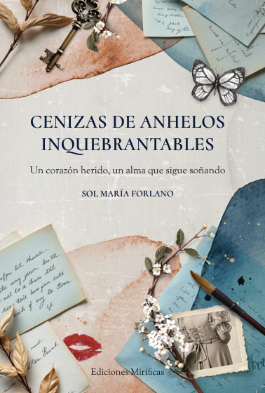

Cenizas de anhelos inquebrantables
Es mi primer libro publicado, junto a @mirificasediciones. Es un poemario sobre amor y desamor, dividido en secciones acorde a romances de mi vida.
Sinopsis
Cenizas de anhelos inquebrantables es un viaje a través de diversos amores y momentos en la vida de la autora. A través de la poesía, encontramos la esencia de cada uno de ellos de manera anónima, con la posibilidad de disfrutarlos desde la experiencia personal. Este poemario abraza a quienes, en algún momento, amaron, sintieron o perdieron: a quienes estuvieron dispuestos a abrir su corazón. Con un tono que oscila entre lo romántico y lo melancólico, entrelaza la realidad y la ficción en versos cargados de emociones universales y auténticas.
La autora invita a descubrirse en sus páginas, a encontrar consuelo, belleza y arte en cada palabra, a verse a uno mismo en el alma de otro y, quizás, a animarse a poetizar su propio corazón.